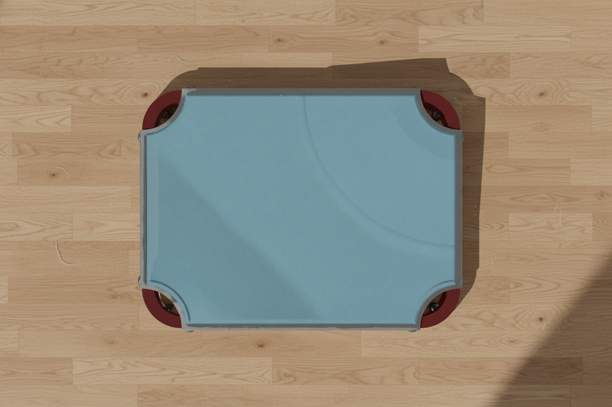
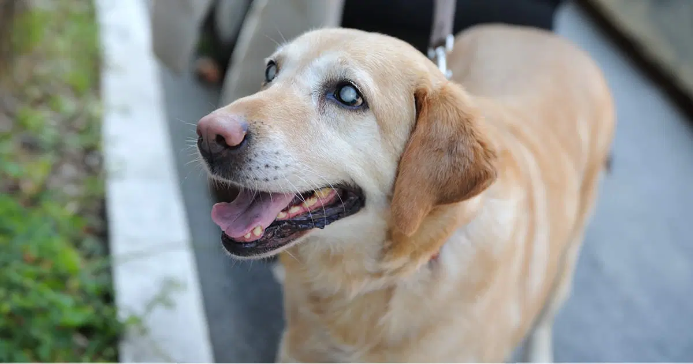
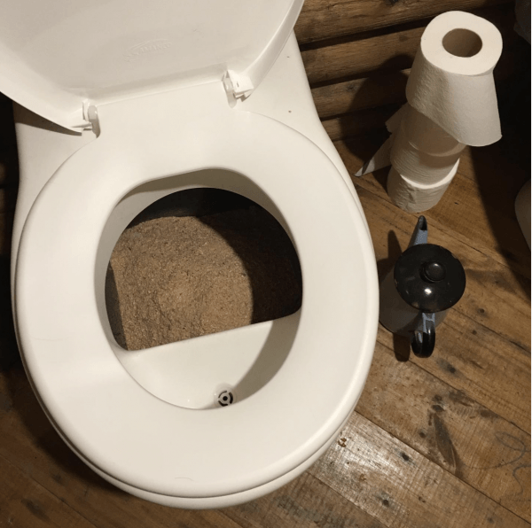
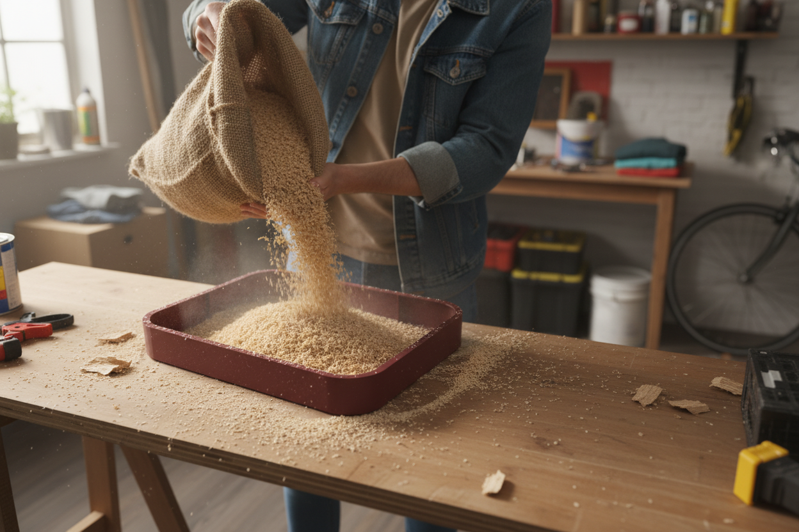

Una cama para perros mayores con problemas de incontinencia, capaz de mantener su cama limpia cuand sufen fugas.



Una cama para perros mayores con problemas de incontinencia, capaz de mantener su cama limpia cuand sufen fugas.

A medida que lo perros envejecen, van sufriendo diferentes problemas de salud, como la ceguera o la incontinencia. Yo mismo tengo una perra que a fecha de este proyecto tiene 14 años, y sufre de varios de estos problemas.
Por ello, para un trabajo de Salud y Bienestar Animal he decidio dar a mi perra una cama en la que pueda descansar sin mojar su cama y estropear su lugar de descanso.

Me he fijado en el funcionamiento de los retretes secos, típicos en paises del norte y en caravanas y autocaravanas. Son retetes con un deposito de serrin que se encarga de desecar y absorber todos los líquidos, eliminando el olor y facilitando la limpieza.
Aplicar este concepto a una cama para perros me permite crear una cama que elimina líquidos, olores y malestar, pero ¿cómo implementarlo sobre una superficie donde el perro debe ser capaz tambien de tumbarse y descansar?

Tras investigar sobre diferentes tipos de tejidos, encontre unas mallas llamadas ¨3D Air Mesh¨ las cuales se crean con impresión 3D y tienen una composición 99% de aire, lo que asegura una permeabilidad abosluta, manteniendo cierto grado de comodidad.
Jugando con el grosor en distintas partes de la cama, puedes guiar al perro para que apuye la cabeza en ciertas partes más aclchadas, mientras que la vejiga quede en las zonas más finas, crando una barrera ergonómica que evita qeu el perro se manche a si mismo.
Para cambiar y limpiar la cama, simplemente se desengancha de unos corchetes laterales del marco y se separa la tela de la cama.
